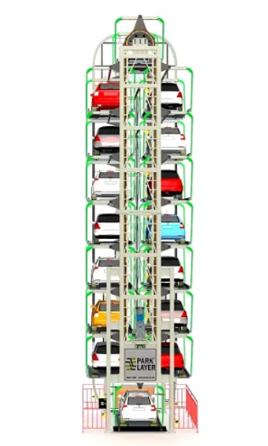

Desarrollar e implementar un sistema de parqueadero automatizado vertical que optimice el uso del espacio, mejore la eficiencia operativa y garantice la seguridad de los vehículos y usuarios, ofreciendo una solución innovadora y sostenible para el estacionamiento en áreas urbanas de alta densidad.
Diseñar e integrar un sistema de sensores avanzados que permita la detección precisa de vehículos y garantice la seguridad durante el proceso de entrada, almacenamiento y salida de los mismos.
Desarrollar un software de control automatizado que gestione de forma eficiente la asignación de espacios, el movimiento de las plataformas y la interacción con los usuarios mediante interfaces amigables.
Implementar medidas de seguridad y monitoreo continuo a través de sensores de proximidad, cámaras y sistemas de diagnóstico, que minimicen riesgos de accidentes y optimicen el mantenimiento preventivo del sistema.
Como idea para nuestro proyecto hemos decidido mejorar los sistemas de aparcamiento de coches de una forma más viable, el cual será una torre en especie de ruleta la cual donde anteriormente se estacionaban dos vehículos podremos estacionar de 8 hasta 12 vehículos a la vez, con esto buscamos por medio de las nuevas tecnologías hacer de un parqueadero más ergonómico y eficiente. Que tenga menos impacto en la congestión vial, que brinde más seguridad, más agilidad y eficiencia al momento de parquear.
En las grandes ciudades colombianas, el crecimiento acelerado del parque automotor y la falta de espacio para nuevas infraestructuras de estacionamiento están generando serios desafíos para la movilidad urbana. Ciudades como Bogotá, Medellín y Cali enfrentan problemas de congestión vehicular, escasez de lugares para estacionar y ocupación desmedida de terrenos en zonas comerciales y residenciales. Estos factores han impulsado la búsqueda de soluciones innovadoras que optimicen el uso del espacio y mejoren la eficiencia en la gestión del estacionamiento. Una de las soluciones más prometedoras es la implementación de parqueaderos automatizados verticales, una tecnología avanzada que utiliza sistemas automáticos para almacenar vehículos en estructuras de varios pisos, aprovechando al máximo el espacio vertical en lugar de horizontal. Este tipo de parqueadero representa un cambio radical frente a los tradicionales estacionamientos de superficie y ofrece una alternativa más eficiente, ecológica y rentable en comparación con otros modelos.
En Alemania, empresas como WÖHR y Volkswagen Group han implementado sistemas de estacionamiento automatizados, algunos de los cuales integran tecnología de carga para vehículos eléctricos, lo que también ha sido objeto de investigación. En China, debido a la alta densidad poblacional y la expansión urbana, varios proyectos de estacionamiento automatizado vertical están en desarrollo, tanto en grandes ciudades como Shanghái y Beijing.
En Colombia y Argentina, algunos estudios de viabilidad han comenzado a explorar el potencial de los parques de estacionamiento automatizados verticales. Se han realizado investigaciones sobre el impacto de la automatización en la reducción de la congestión vehicular y el uso del suelo en ciudades como Bogotá y Buenos Aires.
Reglamentación sobre Infraestructura Tecnológica
Dado que se trata de un sistema de tecnología automatizada, el parqueadero vertical debe cumplir con las normas técnicas establecidas para este tipo de tecnologías, las cuales incluyen aspectos de seguridad electrónica, accesibilidad digital, y mantenimiento de equipos.
Normas de Ciberseguridad: El sistema debe garantizar que los datos de los usuarios (como los relacionados con el acceso y la operación del parqueadero) sean gestionados de manera segura. Se deben cumplir con las normativas colombianas relacionadas con la protección de datos personales (Ley 1581 de 2012 y sus reglamentos).
Certificación de Equipos: Los equipos y tecnologías involucrados en el sistema (elevadores, sensores, plataformas, etc.) deben estar certificados bajo normas internacionales o nacionales de calidad y seguridad.
Regulaciones de Estacionamiento Inteligente
Las ciudades de Colombia están avanzando hacia la implementación de soluciones de movilidad inteligente que incluyen sistemas de parqueo inteligente y la integración de tecnologías automatizadas. Es importante que el parqueadero vertical se alinee con las regulaciones que fomentan el uso eficiente del espacio y la optimización de la movilidad en la ciudad.
En la capital colombiana, se han realizado estudios para analizar la viabilidad de los parqueaderos automatizados verticales. Bogotá enfrenta problemas de congestión vehicular y una escasez de espacios de estacionamiento, especialmente en zonas comerciales y residenciales de alta demanda, como en el norte de la ciudad y Chapinero. Algunos proyectos urbanos han considerado la integración de sistemas automatizados para maximizar el uso del espacio. Por ejemplo, un grupo de arquitectos e ingenieros colombianos está trabajando en el diseño de parqueaderos automatizados en proyectos de infraestructura inteligente para nuevas construcciones comerciales y residenciales en el área metropolitana de Bogotá
Japón es uno de los países pioneros en el desarrollo de parqueaderos automatizados verticales. Desde la década de 1970, el país ha liderado la innovación en sistemas de estacionamiento automáticos debido a su alta densidad urbana, la escasez de espacio y la alta demanda de estacionamientos. Ciudades como Tokio y Osaka han implementado con éxito estos sistemas, con más de 3.000 instalaciones en todo el país. Un ejemplo destacado es el sistema "Park24", que utiliza tecnología avanzada para el estacionamiento automático de vehículos en espacios de hasta 10 pisos, con una eficiencia que permite almacenar hasta 60 vehículos en el espacio que normalmente ocuparían 10.
La ingeniería mecánica es una de las disciplinas clave en el diseño de un sistema de estacionamiento automatizado. Esta disciplina se encarga de diseñar los mecanismos y sistemas que permiten el movimiento de los vehículos dentro del estacionamiento. Algunos de los componentes relevantes incluyen: Sistemas de elevacion y Sistemas de trasporte.
La ingieneria electronica y de control juegan un papel crucial en la operación eficiente del parqueadero. Algunos de los aspectos clave incluyen: Sensores, Sistemas de control automatico y Redes de comunicacion